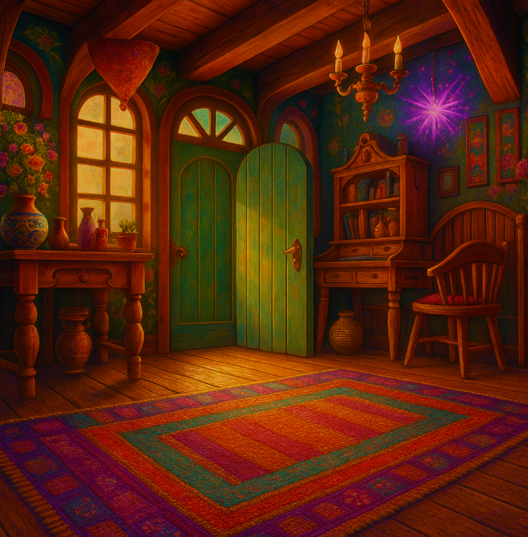

Mouse and Bat tumbled through the hidden door — and landed back home.
The world stopped spinning. The familiar cozy smells of the cottage wrapped around them like a warm blanket. The creaky wood floors. The glowing fireplace. The safety of everything they knew and loved.
Bat let out a shaky laugh. "Remind me never to mess with upside-down portals again," he said, flopping onto a pillow.
Mouse smiled tiredly, adjusting his vampire cape. "Next time," he said, "we'll take the normal door."
But in his heart, Mouse knew...
Adventure always finds those who dare to look.